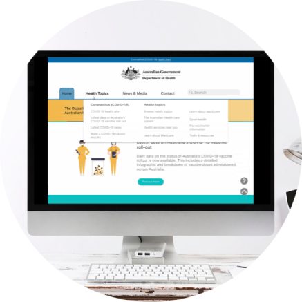
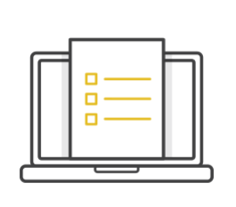

A b o u t
Hi, my name is Lindsay Simone Sigg and I am a UX/UI Designer based in Melbourne, Australia. Working in UX/UI is more than an occupation, it’s looking at everything in our life’s landscape to discover how we can improve our everyday. I enjoy diving headfirst into a problem space and unearthing creative solutions for users and products. Consistanly challenging how we can iterate and reimagine our world is always at the core of every project and it’s exciting to see where the process can takes us.
P r o j e c t s

Doggie Dates
Doggie Dates was designed to connect fellow dog lovers and sitters. Through this app development, some notable issues were uncovered that dog owners were facing. The outcome was a fun app design

BirdLife Redesign
The goal of this project was to redesign the BirdLife website to enable better user efficiency, usability and accessibility to information using in depth analysis and research and implementing UX/UI methods

Health Redesign
Usability was crutial during this redesign as it is a widely user governemnt platform. Through user testing, a great result was achieved. It was exciting to design for such a wide audience and cater to accessibility issues
A p p r o a c h
Creating a positive interaction with digital products is like telling a good story. We need to pay attention to developing not only the protaganist persona but the other characters and environment that work to build the entire narrative. To achieve great design, we compile our findings and develop a narrative that compels users to engage with our products. This is depicted through user centered design, thoughful UX and captivating UI.
P r o c e s s
The process is important, but not the same for every project. One methodology however, does remain consistant in UX/UI. This is the use of the double diamond technique. The double diamond technique ensures that key UX/UI princibles are implemented at every stage of the project and helps ignite the design thought process from the word go
S k i l l s e t

Research
- Competitive analysis
- Empathy mapping
- User persona
- Usability testing
- User testing
- User journey
- Feature prioritization
- Storyboarding
- Affinity mapping
- Qualitative & quantitative research
Development
- Sketching
- Ideation
- Prototyping (rapid)
- Iteration
- User testing
- Basic html
- Basic css
- Style guides
- Ui design
- Interactive prototyping
T o o l b o x